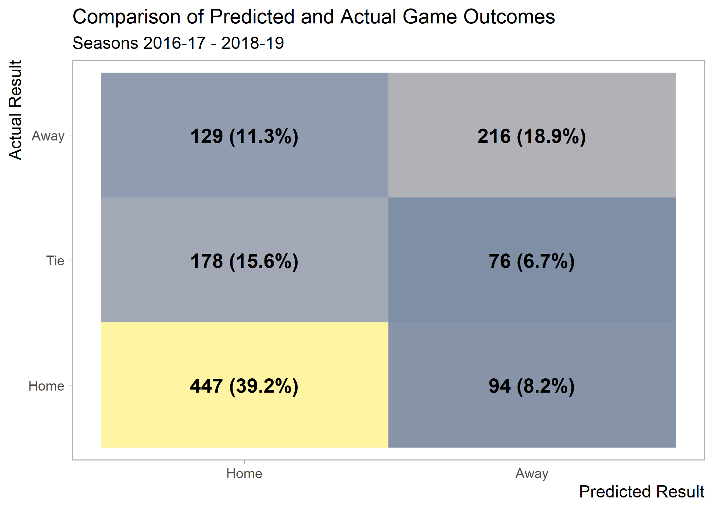
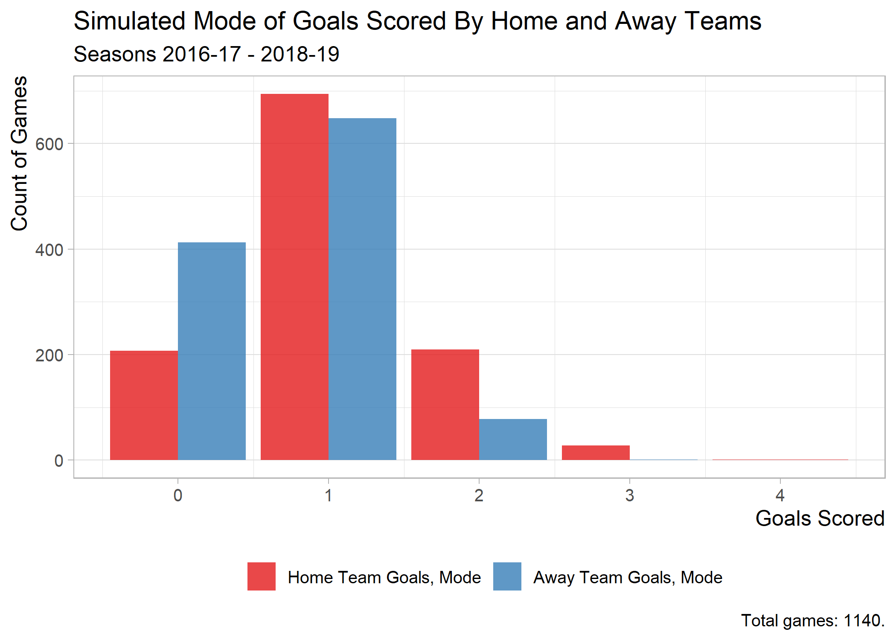
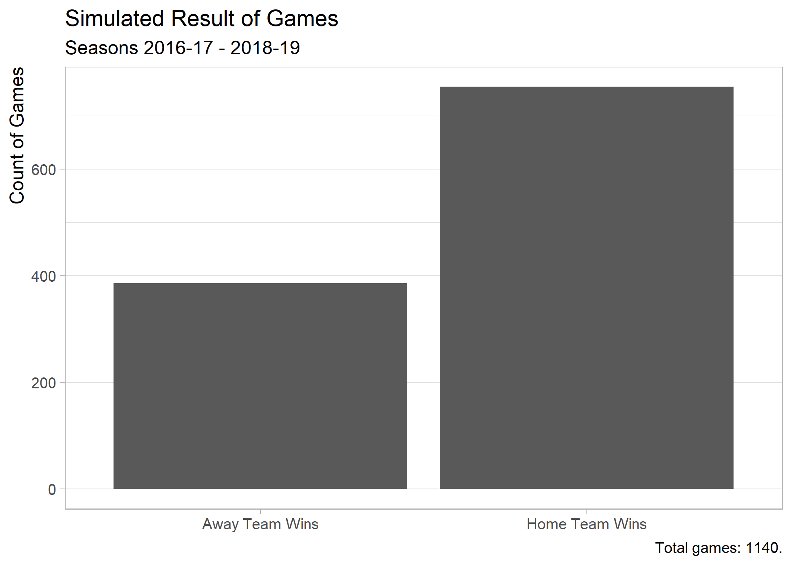

A Bayesian Approach to Ranking English Premier League Teams (using R)
As I mentioned back in July, I havent had as much time (since summer of 2018) to write due to taking classes in pursuit of a degree from Georgia Techs Online Master of Science in Analytics (OMSA) program. On the other hand, the classes have given me some ideas for future content. And, in the case of the Bayesian Statistics class that I took this past fall, theres content that translates well to a blog post directly. What follows is a lightly edited version of the report that I submitted at the end of the semester for this class.
I model and predict English Premier League (EPL) game outcomes using Bayesian methods. Specifically, I estimated goals scored by each team in a given game as independent Poisson processes, taking the difference of the estimated points scored on each side to determine game winners. More broadly, one may call this a hierarchical Bayesian Poisson model.
Why model goals scored using a Poisson distribution? By definition, it is a discrete probability distribution that expresses the probability of a given number of events occurring in a fixed interval of time with a known constant rate. In the context of soccer, the fixed interval of time is the 90 minutes of a game (disregarding injury time and over time), and the known constant rate is the expected number of goals scored per minute. Importantly, I must make the assumption that the rate of scored goals is the same across all minutes of a game. 1 Additionally, when computing the difference between Poisson distributions, I must assume that the two distributions are independent of one another. 2
Using Poisson distributions to model soccer scores is certainly not a novel concept. 3 4 In particular, I would like to acknowledge the work of Rasmus Baaths, whose series of blog posts exemplifying the use of R and JAGS to model scores in La Liga games between the 2008-09 to 2012-13 season served as a guide for the analysis that I conduct here. 5 6
For this project I retrieved game scores and outcomes for the previous three seasons of EPL games (i.e.from the 2016-17 season through the 2018-2019 season).
# Reference: https://github.com/jalapic/engsoccerdata/blob/master/R/england_current.R
scrape_epl_data <- function(season = lubridate::year(Sys.Date()) - 1L) {
s1 <- season %>% str_sub(3, 4) %>% as.integer()
s2 <- s1 + 1L
path <- sprintf('http://www.football-data.co.uk/mmz4281/%2d%2d/E0.csv', s1, s2)
data_raw <- path %>% read_csv()
data <-
data_raw %>%
janitor::clean_names() %>%
mutate_at(vars(date), ~as.Date(., '%d/%m/%y')) %>%
select(
date,
tm_h = home_team,
tm_a = away_team,
g_h = fthg,
g_a = ftag
) %>%
mutate(
g_total = g_h + g_a,
g_diff = g_h - g_a,
result =
case_when(
g_h > g_a ~ 'h',
g_h < g_a ~ 'a',
TRUE ~ 't'
),
tm_winner =
case_when(
g_h > g_a ~ tm_h,
g_h < g_a ~ tm_a,
TRUE ~ NA_character_
)
) %>%
mutate_at(vars(matches('season|^g_')), as.integer)
}
data <-
tibble(season = seasons) %>%
mutate(data = map(season, scrape_epl_data)) %>%
unnest(data)
data
My model is formally defined as follows.
\[ \begin{array}{c} g_h \sim \mathcal{Pois}(\lambda_{h,i,j}) \\ g_a \sim \mathcal{Pois}(\lambda_{a,i,j}) \\ \log(\lambda_{h,i,j}) = \text{baseline}_h + (z_i - z_j) \\ \log(\lambda_{a,i,j}) = \text{baseline}_a + (z_j - z_i). \\ \end{array} \]
This model estimates the goals scored by the home team, \(g_h\), and the goals scored by the away team, \(g_a\), in a given game between home team, \(\text{tm}_h\), and away team, \(\text{tm}_a\), as random variables coming from independent Poisson processes, \(\mathcal{Pois}(\lambda_{h,i,j})\) and \(\mathcal{Pois}(\lambda_{a,i,j})\). The log of the rate of goals scored by the home team, \(\lambda_{h,i,j}\), in a game between \(\text{tm}_i\) and \(\text{tm}_j\) is modeled as the sum of a baseline average of goals scored by any given team playing at home, \(\text{baseline}_h\), and the difference between the team strength \(z\) of teams \(i\) and \(j\) in a given game. I define the log of the goal rate by the away team, \(\lambda_{a,i,j}\), in a similar fashion. 7 It is important to distinguish the baseline levels for home and away so as to account for home field advantage. (One should expect to find that \(\text{baseline}_h > \text{baseline}_a\) in the posterior estimates.)
Since I am employing a Bayesian approach, I need to model priors as well. I define them as follows.
\[ \begin{array}{c} \text{baseline}_h \sim \mathcal{N}(0, 2^2) \\ \text{baseline}_a \sim \mathcal{N}(0, 2^2) \\ z_{i} \sim \mathcal{N}(z_{\text{all}} , \sigma^2_{\text{all}}) \quad \text{tm}_i > 1 \\ z_{\text{all}} \sim \mathcal{N}(0, 2^2) \\ \sigma_{\text{all}} \sim \mathcal{U}(0, 2). \end{array} \]
There are a couple of things to note about these priors. First, I must zero-anchor the strength estimate \(z\) of one team. (This is manifested by \(\text{tm}_i > 1\).) Here, I choose the first team alphabeticallyArsenal. Second, the priors are intentionally defined to be relatively vague (although not too vauge) so as to allow the posterior estimates to be heavily defined by the data rather than the priors. Note that the standard deviation of the overall team strength parameter \(z_{\text{all}}\), defined as \(2\) on a log scale, corresponds to an interval of \(\left[e^{-2}, e^2\right] = \left[0.13, 7.40\right]\) on an unstransformed scale, i.e.goals scored per game.
I leverage the {R2OpenBUGs} package to create this model with R on the frontend and generate the results using the OpenBUGS engine on the backend. Regarding the implementation itself, note that I run 100,000 simulations (n.iter), minus 1,000 burn-in runs (n.burn).
The raw results are as follows. (As a quick validation of these results, note that \(\text{baseline}_h > \text{baseline}_a\), as hypothesized.)
Next, I correspond the strength estimates \(z\) to teams. Notably, I must re-add the zero-anchored teamArsenal (whose \(z\) is assigned a dummy value of 1). To do this, I impute its credible set quantiles using the values of the overall strength term \(z_{\text{all}}\).
Its not surprising to see that the strength (\(z\)) corresponding to all but three teamsLiverpool, Man City, and Tottenhamis negative. These three teams, followed closely by Arsenal have been regarded as the best teams for the past two or three EPL seasons. So, relative to Arsenal, all other teams (aside from the top three) are viewed as worse by the model.
Note that the \(z\) estimates above should not be interpreted as goals scored by the teams because they are relative to the strength of Arsenal. To facilitate such an interpretation, I need to translate \(z\) to goals scored per game. To do this, for each \(z\), I (1) subtract the average value of all \(z\)s, (2) add the posterior mean of \(\text{baseline}_{h}\), and (3) exponentiate.
The plot below shows the results of this transformation.
I can make predictions of game results for the historical data, given the model. Specifically, I simulate the score for both teams in each matchup (1,140 in all) 1,000 times, choosing the result inferred by the mode of each sides simulated score. (For example, if the mode of the 1,000 simulated scores for the away team is 1 and that of the home team is 2, then the predicted outcome is a win for the home team.) A breakdown of the predicted and actual outcomes is shown below.

I make a couple of observations:
The next couple of visuals provide more details regarding the simulated outcomes.

From the above graph of the mode of goals scored by both sides, its apparent that a 2-1 scores in favor of the home side is the most common outcome.
The above histogram illustrating the mean (instead of the mode) of the simulated goals provides a bit more nuance to our understanding of modes shown before.

Finally, the above visual shows the predicted outcomes (inferred from the prior graph of predicted modes).
To better understand how the model works on a team-level basis, lets look at how well it predicts for each team.
| Team | # of Wins | Win % |
|---|---|---|
| Arsenal | 46 | 80.70% |
| Man City | 45 | 78.95% |
| Tottenham | 43 | 75.44% |
| Liverpool | 41 | 71.93% |
| Chelsea | 39 | 68.42% |
| Cardiff | 12 | 63.16% |
| Everton | 36 | 63.16% |
| Fulham | 12 | 63.16% |
| Man United | 35 | 61.40% |
| Huddersfield | 23 | 60.53% |
| Burnley | 34 | 59.65% |
| Stoke | 22 | 57.89% |
| Bournemouth | 30 | 52.63% |
| Crystal Palace | 30 | 52.63% |
| Sunderland | 10 | 52.63% |
| Swansea | 20 | 52.63% |
| West Ham | 30 | 52.63% |
| Watford | 29 | 50.88% |
| Newcastle | 19 | 50.00% |
| Leicester | 28 | 49.12% |
| Middlesbrough | 9 | 47.37% |
| West Brom | 18 | 47.37% |
| Wolves | 9 | 47.37% |
| Brighton | 15 | 39.47% |
| Southampton | 22 | 38.60% |
| Hull | 6 | 31.58% |
In most cases, the model predicts the outcome correctly (see is_correct) with greater than 50% accuracy, although there are also teams for which its accuracy is less than 50%.
In summary, I have created a hierarchical Poisson model to predict scoresand, consequently, game outcomesfor EPL games for the three seasons starting in 2016 and ending in 2018. The model has an training set prediction accuracy of 66.3%. Baath, whose work inspired mine, achieved an accuracy of 56% with his final model.
My model can certainly be improved. One major flaw of the model is that it does not account for temporal effects, i.e.differences in team strength across seasons. 8 The consequences of this flaw are compounded by the fact that the pool of teams in each EPL season changes. At the end of each season, the three worst EPL teams (by win-loss-tie record) are relegated to a secondary league, and, in turn, three secondary league teams are promoted to the EPL in their place. 9 Consequently, one might say that the estimates of the teams that do not appear in all seasons are exaggerated.
See all relevant R code below.
library(tidyverse)
# Data Collection
seasons <- 2016L:2018L
# Reference: https://github.com/jalapic/engsoccerdata/blob/master/R/england_current.R
scrape_epl_data <- function(season = lubridate::year(Sys.Date()) - 1L) {
s1 <- season %>% str_sub(3, 4) %>% as.integer()
s2 <- s1 + 1L
path <- sprintf('http://www.football-data.co.uk/mmz4281/%2d%2d/E0.csv', s1, s2)
data_raw <- path %>% read_csv()
data <-
data_raw %>%
janitor::clean_names() %>%
mutate_at(vars(date), ~as.Date(., '%d/%m/%y')) %>%
select(
date,
tm_h = home_team,
tm_a = away_team,
g_h = fthg,
g_a = ftag
) %>%
mutate(
g_total = g_h + g_a,
g_diff = g_h - g_a,
result =
case_when(
g_h > g_a ~ 'h',
g_h < g_a ~ 'a',
TRUE ~ 't'
),
tm_winner =
case_when(
g_h > g_a ~ tm_h,
g_h < g_a ~ tm_a,
TRUE ~ NA_character_
)
) %>%
mutate_at(vars(matches('season|^g_')), as.integer)
}
data <-
tibble(season = seasons) %>%
mutate(data = map(season, scrape_epl_data)) %>%
unnest(data)
data
pull2 <- function(data, ...) {
data %>%
pull(...) %>%
as.factor() %>%
as.integer()
}
tms <- data %>% distinct(tm_h) %>% arrange(tm_h) %>% pull(tm_h)
n_tm <- tms %>% length()
n_gm <- data %>% nrow()
n_season <- seasons %>% length()
data_list <-
list(
g_h = data %>% pull(g_h),
g_a = data %>% pull(g_a),
tm_h = data %>% pull2(tm_h),
tm_a = data %>% pull2(tm_a),
season = data %>% pull2(season),
n_tm = n_tm,
n_gm = n_gm,
n_season = n_season
)
str(data_list)
model_1 <- glue::glue_collapse('model {
for(g in 1:n_gm) {
g_h[g] ~ dpois(lambda_h[tm_h[g], tm_a[g]])
g_a[g] ~ dpois(lambda_a[tm_h[g], tm_a[g]])
}
for(h in 1:n_tm) {
for(a in 1:n_tm) {
lambda_h[h, a] <- exp(baseline_h + (z[h] - z[a]))
lambda_a[h, a] <- exp(baseline_a + (z[a] - z[h]))
}
}
z[1] <- 0
for(t in 2:n_tm) {
z[t] ~ dnorm(z_all, tau_all)
}
z_all ~ dnorm(0, 0.25)
tau_all <- 1 / pow(sigma_all, 2)
sigma_all ~ dunif(0, 2)
baseline_h ~ dnorm(0, 0.25)
baseline_a ~ dnorm(0, 0.25)
}')
path_model_1 <- 'model_1.txt'
write_lines(model_1, path_model_1)
if(eval_model_1) {
# inits_1 <- list(n_tm = data_list$n_tm)
inits_1 <- NULL
params_1 <-
c(
paste0('baseline', c('_a', '_h')),
paste0('sigma_all'),
paste0('z', c('', '_all'))
)
res_sim_1 <-
R2OpenBUGS::bugs(
# debug = TRUE,
data = data_list,
inits = inits_1,
model.file = path_model_1,
parameters.to.save = params_1,
DIC = FALSE,
n.chains = 1,
n.iter = 10000,
n.burnin = 1000
)
}
# Model 1 Interpretation
z_var_lvls <- sprintf('z[%d]', 2:n_tm)
var_lvls <- c(paste0('baseline', c('_a', '_h')), 'sigma_all', z_var_lvls, 'z_all')
res_sim_summ_1 <-
res_sim_1$summary %>%
as_tibble(rownames = 'var') %>%
# Re-order these.
mutate_at(vars(var), ~factor(., levels = var_lvls)) %>%
arrange(var) %>%
# Then re-coerce var back to its original data type.
mutate_at(vars(var), as.character)
res_sim_summ_1
tms_info <-
tibble(tm = tms) %>%
mutate(tm_idx = row_number())
tms_info
res_sim_summ_1_z <-
bind_rows(
res_sim_summ_1 %>%
filter(var == 'z_all') %>%
mutate(var = 'z[1]') %>%
mutate(tm_idx = 1L) %>%
mutate_at(vars(matches('%$')), ~{. - mean}) %>%
mutate(mean = 0),
res_sim_summ_1 %>%
filter(var %>% str_detect('^z\\[')) %>%
mutate(
tm_idx =
var %>%
str_replace_all('(^z\\[)([0-9]+)(\\]$)', '\\2') %>%
as.integer()
)
) %>%
left_join(tms_info, by = 'tm_idx') %>%
select(-tm_idx) %>%
select(tm, everything()) %>%
arrange(tm)
res_sim_summ_1_z
theme_custom <- function(...) {
theme_light(base_size = 12) +
theme(
legend.position = 'bottom',
legend.title = element_blank(),
axis.title.x = element_text(hjust = 1),
axis.title.y = element_text(hjust = 1),
...
)
}
.lab_subtitle <- 'Seasons 2016-17 - 2018-19'
.visualize_res_sim_summ <- function(data, ...) {
data %>%
arrange(-mean) %>%
mutate_at(vars(tm), ~forcats::fct_reorder(., mean)) %>%
ggplot() +
aes(x = tm) +
geom_pointrange(aes(y = mean, ymin = `2.5%`, ymax = `97.5%`)) +
theme_custom() +
coord_flip() +
labs(
subtitle = .lab_subtitle ,
caption = glue::glue(
'Posterior mean and 95% equitailed credible set depicted.
{tms[1]} used as "zero"-anchor team.'
),
y = NULL
)
}
visualize_res_sim_summ_z <- function(data, ...) {
data %>%
.visualize_res_sim_summ() +
geom_hline(aes(yintercept = 0)) +
labs(
title = glue::glue('Model\'s estimated strength (z)'),
x = 'Posterior mean of z'
)
}
visualize_res_sim_summ_z_adj <- function(data, ...) {
data %>%
.visualize_res_sim_summ() +
labs(
title = glue::glue('Model\'s estimated goals scored per game'),
x = 'Posterior mean of z transformed to goals'
)
}
export_png <-
function(x,
path,
...,
units = 'in',
width = 7,
height = 5) {
ggsave(
plot = x,
filename = path,
units = units,
width = width,
height = height,
...
)
}
n_sim <- 1000
path_preds <- file_path_out('preds_1.rds')
eval_preds <- FALSE # !fs::file_exists(path_preds)
if(eval_preds) {
.baseline_h <- res_sim_summ_1 %>% filter(var == 'baseline_h') %>% pull(mean)
.baseline_a <- res_sim_summ_1 %>% filter(var == 'baseline_a') %>% pull(mean)
.extract_tab_max <- function(tab) {
tab[ which.max(tab)] %>% names() %>% as.integer()
}
do_predict <- function(i) {
data_filt <- data %>% slice(i)
.tm_h <- data_filt %>% pull(tm_h)
.tm_a <- data_filt %>% pull(tm_a)
z_h <- res_sim_summ_1_z %>% filter(tm == .tm_h) %>% pull(mean)
z_a <- res_sim_summ_1_z %>% filter(tm == .tm_a) %>% pull(mean)
g_h <- rpois(n_sim, exp(.baseline_h + (z_h - z_a)))
g_a <- rpois(n_sim, exp(.baseline_a + (z_a - z_h)))
tab_h <- table(g_h)
tab_a <- table(g_a)
result_sign <- sign(g_h - g_a)
tab_result <- table(result_sign)
result_mode <- .extract_tab_max(tab_result)
tibble(
g_h_mode = .extract_tab_max(tab_h),
g_a_mode = .extract_tab_max(tab_a),
result_mode = result_mode,
g_h_mean = mean(g_h),
g_a_mean = mean(g_a)
)
}
set.seed(42)
preds <-
tibble(idx = 1:n_gm) %>%
mutate(res = map(idx, do_predict)) %>%
unnest(res)
preds
}
preds_tidy <-
preds %>%
gather(key = 'key', value = 'value', -idx) %>%
select(idx, key, value)
preds_tidy
.key_lab_g_stem <- 'Team Goals'
.key_lab_g_h_prefix <- sprintf('Home %s, %%s', .key_lab_g_stem)
.key_lab_g_a_prefix <- sprintf('Away %s, %%s', .key_lab_g_stem)
keys_info <-
tribble(
~key, ~key_lab,
'g_h_mode', sprintf(.key_lab_g_h_prefix, 'Mode'),
'g_a_mode', sprintf(.key_lab_g_a_prefix, 'Mode'),
'g_h_mean', sprintf(.key_lab_g_h_prefix, 'Mean'),
'g_a_mean', sprintf(.key_lab_g_a_prefix, 'Mean'),
'result_mode', 'Result, Mode'
) %>%
mutate(idx = row_number()) %>%
mutate_at(vars(key_lab), ~forcats::fct_reorder(., idx)) %>%
select(-idx)
keys_info
preds_tidy_aug <-
preds_tidy %>%
inner_join(keys_info)
preds_tidy_aug
preds_aug <-
preds %>%
inner_join(data %>% mutate(idx = row_number())) %>%
mutate_at(
vars(result_mode),
~case_when(
. == 1 ~ 'h',
. == -1 ~ 'a',
. == 0 ~ 't'
)
)
conf_mat_tidy <-
preds_aug %>%
count(result_mode, result)
conf_mat_correct <-
conf_mat_tidy %>%
group_by(is_correct = result_mode == result)
conf_mat_correct_summ <-
conf_mat_correct %>%
summarise_at(vars(n), ~sum(.)) %>%
ungroup() %>%
mutate(frac = n / sum(n))
conf_mat_correct
conf_mat_correct_h <- conf_mat_correct %>% filter(is_correct, result == 'h')
# conf_mat_correct_t <- conf_mat_correct %>% filter(is_correct, result == 't')
conf_mat_correct_a <- conf_mat_correct %>% filter(is_correct, result == 'a')
conf_mat_correct_summ_yes <- conf_mat_correct_summ %>% filter(is_correct)
viz_conf_mat <-
conf_mat_tidy %>%
mutate(frac = n / sum(n)) %>%
mutate(n_lab = sprintf('%s (%s)', scales::comma(n), scales::percent(frac))) %>%
mutate_at(
vars(matches('result')),
~forcats::fct_relevel(., c('h', 'a')) # c('h', 't', 'a'))
) %>%
mutate_at(
vars(matches('result')),
~forcats::fct_recode(., Home = 'h', Away = 'a') # , Tie = 't')
) %>%
ggplot() +
aes(x = result_mode, y = result) +
geom_tile(aes(fill = n)) +
geom_text(aes(label = n_lab), size = 5, fontface = 'bold', color = 'black') +
# scale_fill_manual(limits = c(0, 0.5)) +
scale_fill_viridis_c(alpha = 0.5, begin = 0, end = 1, option = 'E') +
theme_custom() +
theme(
legend.position = 'none',
panel.grid.major = element_blank(),
panel.grid.minor = element_blank()
) +
labs(
title = 'Comparison of Predicted and Actual Game Outcomes',
subtitle = .lab_subtitle,
x = 'Predicted Result',
y = 'Actual Result'
)
viz_conf_mat
viz_g_mode <-
preds_tidy_aug %>%
filter(key %>% str_detect('^g.*mode$')) %>%
ggplot() +
aes(x = value, fill = key_lab) +
scale_fill_brewer(palette = 'Set1') +
geom_bar(position = 'dodge', alpha = 0.8) +
theme_custom() +
theme(
panel.grid.major.x = element_blank()
) +
labs(
title = 'Simulated Mode of Goals Scored By Home and Away Teams',
subtitle = .lab_subtitle,
caption = .lab_caption_n_gm,
x = 'Goals Scored',
y = 'Count of Games'
)
viz_g_mode
viz_g_mean <-
preds_tidy_aug %>%
# This is done so that the `aes()` can be defined before data is actually passed into the whole ggplot pipeline.
filter(row_number() == 0) %>%
ggplot() +
aes(x = value, fill = key_lab) +
scale_fill_brewer(palette = 'Set1') +
geom_histogram(data = filter(preds_tidy_aug, key == 'g_h_mean'), alpha = 1, binwidth = 0.2) +
geom_histogram(data = filter(preds_tidy_aug, key == 'g_a_mean'), alpha = 0.5, binwidth = 0.2) +
theme(
panel.grid.major.x = element_blank()
) +
theme_custom() +
labs(
title = 'Simulated Mean of Goals Scored By Home and Away Teams',
subtitle = .lab_subtitle ,
caption = .lab_caption_n_gm,
x = 'Goals Scored',
y = 'Count of Games'
)
viz_g_mean
preds_tidy_res <-
preds_tidy %>%
filter(key == 'res_mode') %>%
mutate_at(
vars(value),
list(value_lab = ~case_when(
. == 1 ~ 'Home Team Wins',
. == 0 ~ 'Draw',
. == -1 ~ 'Away Team Wins'
))
) %>%
mutate_at(vars(value_lab), ~forcats::fct_reorder(., value))
preds_tidy_res %>% count(value_lab)
viz_result_mode <-
preds_tidy %>%
filter(key == 'result_mode') %>%
mutate_at(
vars(value),
list(value_lab = ~case_when(
. == 1 ~ 'Home Team Wins',
. == 0 ~ 'Draw',
. == -1 ~ 'Away Team Wins'
))
) %>%
mutate_at(vars(value_lab), ~forcats::fct_reorder(., value)) %>%
ggplot() +
aes(x = value_lab) +
geom_bar(position = 'dodge') +
theme_custom() +
theme(
panel.grid.major.x = element_blank()
) +
labs(
title = 'Simulated Result of Games',
subtitle = .lab_subtitle ,
caption = .lab_caption_n_gm,
x = NULL,
y = 'Count of Games'
)
viz_result_mode
preds_by_tm <-
preds_aug %>%
group_by(tm_h) %>%
count(is_correct = result_mode == result) %>%
mutate(frac = n / sum(n)) %>%
ungroup() %>%
filter(is_correct) %>%
arrange(-frac) %>%
mutate(pct = scales::percent(frac)) %>%
select(-frac)
This is arguably a bad assumption. Research has shown that goal rate per minute increases in the last 15 minutes of a game.
This may also be perceived to be a questionable assumption. One may argue that a matchup of stylese.g.an aggressive team against another aggressive teammay distort the results from what would otherwise be expected.
This approach is arguably too simplistic, but it is certainly a valid approach.
See this Pinnacle blog post for a discussion of the topic. (Undoubtedly there are many more articles and papers that explore a similar notion.)
There are several notable differences with my work compared to that of Bth: (1) I use the OpenBUGS software (and the {R2OpenBUGS} package) instead of JAGS; (2) I evaluate EPL teams instead of La Liga teams, and over a different time period; (3) I use a tidy approach (in terms of packages, plotting, coding style, etc.) instead of a more traditional base R approach; (4) I implement a modified version of the second of Baaths three proposed models (notably, using different priors).
Baaths work is licensed under the Creative Commons license, which allows for others to adapt the work of another.
Note that I substitute the baseline home average goal rate with a baseline for away teams, \(\text{baseline}_a\), and I swap the order of the \(z_j\) and \(z_i\) teams since the relationship is not bi-directional. Also, note that I am careful to distinguish between subscript pair \(_h\) and \(_a\) for home and away and pair \(_i\) and \(_j\) for team \(i\) and team \(j\). The latter pair is independent of the notion of home or away.
There are certainly also changes in team strength within seasons, which are even more difficult to model.
This explains why there are more than 20 teams in thee data set even though there are only 20 teams in the EPL in a given season.
For attribution, please cite this work as
ElHabr (2019, Dec. 13). My Blog: A Bayesian Approach to Ranking English Premier League Teams (using R). Retrieved from https//tonyelhabr.rbind.io/
BibTeX citation
@misc{elhabr2019a,
author = {ElHabr, Tony},
title = {My Blog: A Bayesian Approach to Ranking English Premier League Teams (using R)},
url = {https//tonyelhabr.rbind.io/},
year = {2019}
}